Dokumentasi kegiatan Praktik Pengalaman Lapangan (PPL) 1 selama pelaksanaan Pendidikan Profesi Guru Bidang Studi Informatika Universitas Pendidikan Indonesia Tahun 2026 di SMA Negeri 12 Bandung.
Halaman ini berisi dokumentasi berbagai aktivitas selama pelaksanaan Praktik Pengalaman Lapangan (PPL) 1, mulai dari observasi lingkungan sekolah, kegiatan pembelajaran di kelas, refleksi pembelajaran, hingga kolaborasi bersama guru pamong.
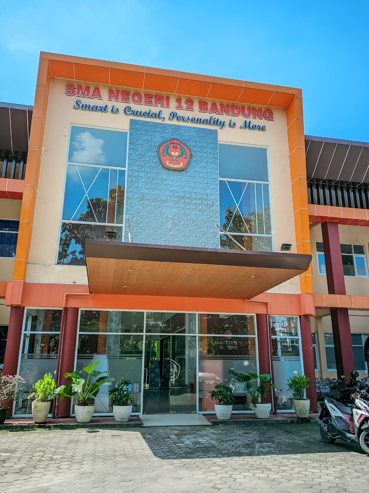
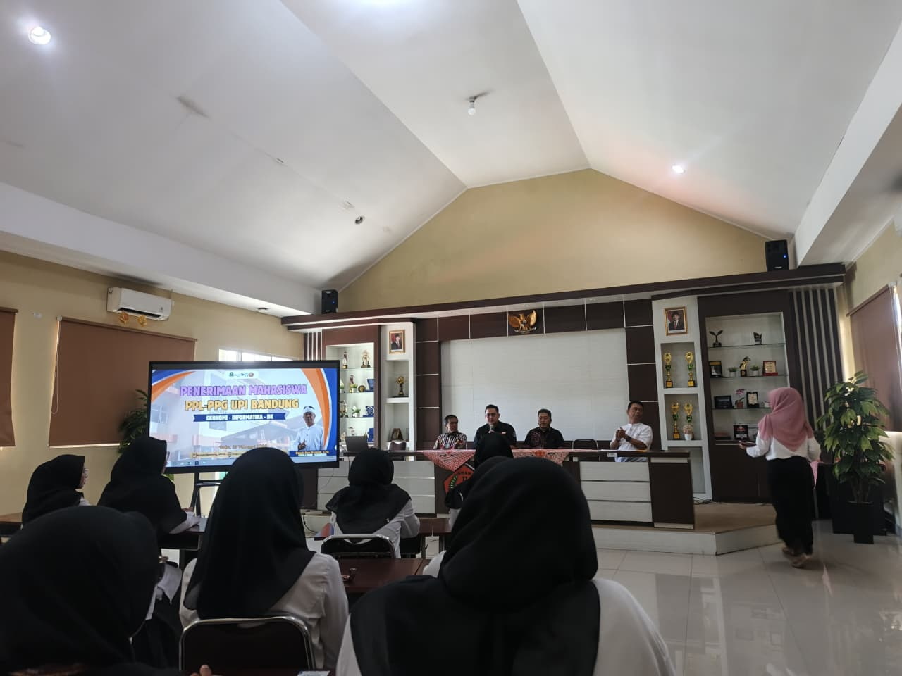
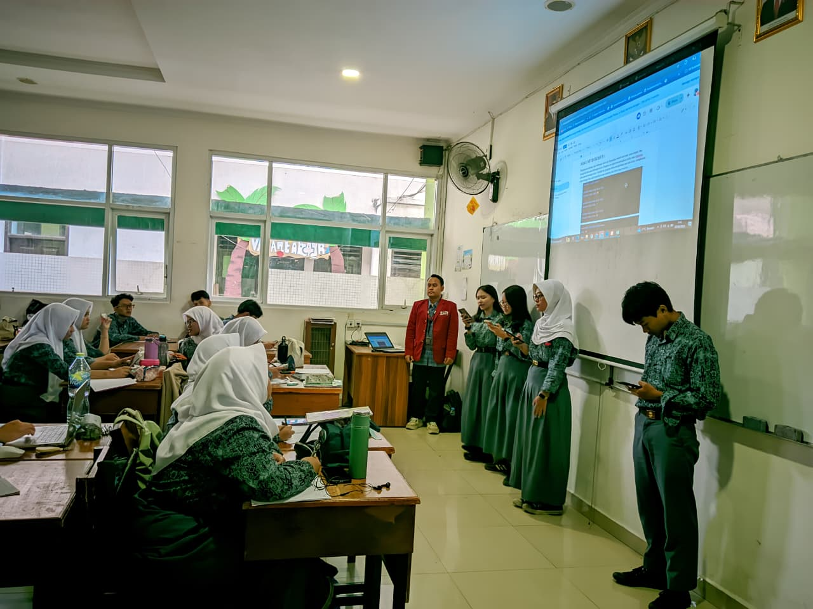
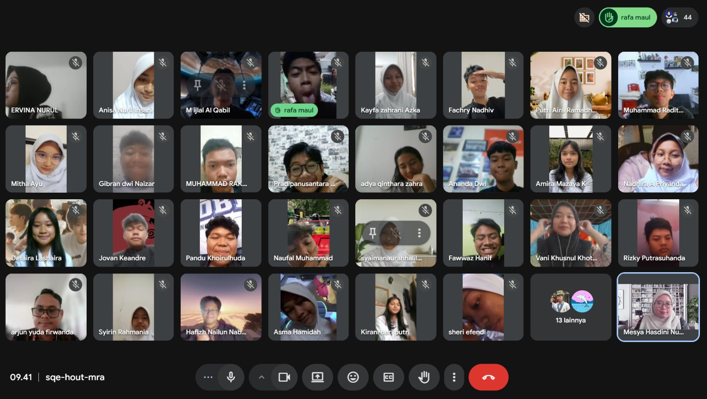
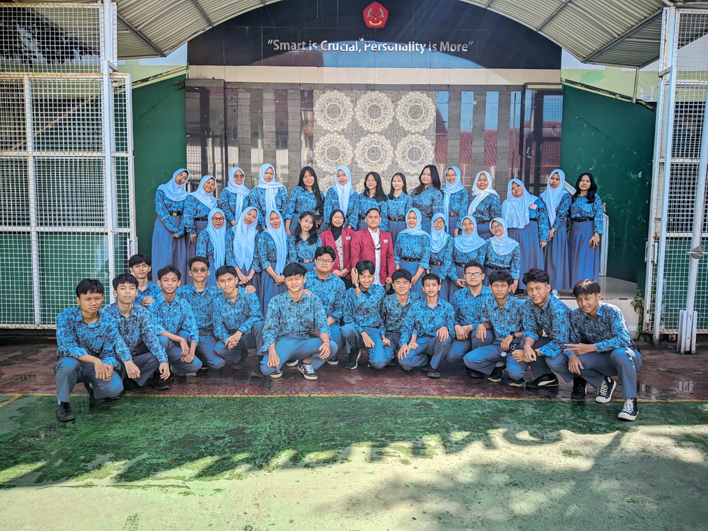
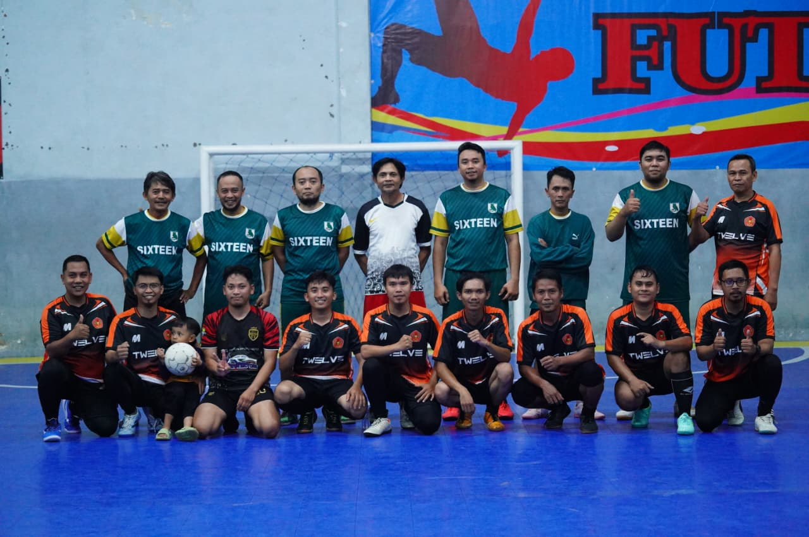
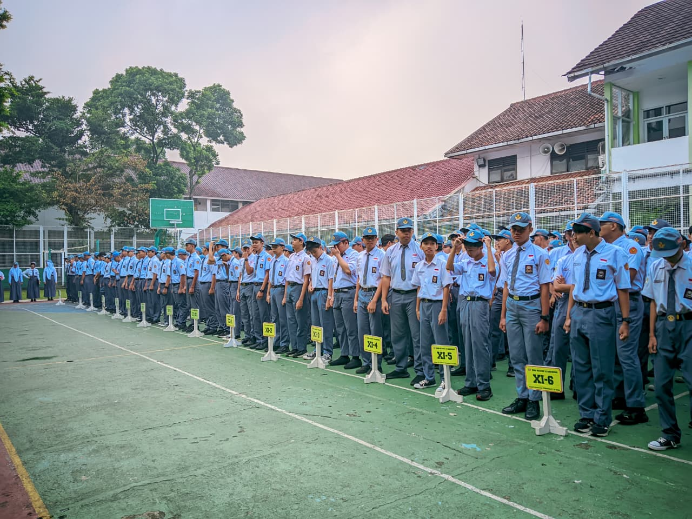
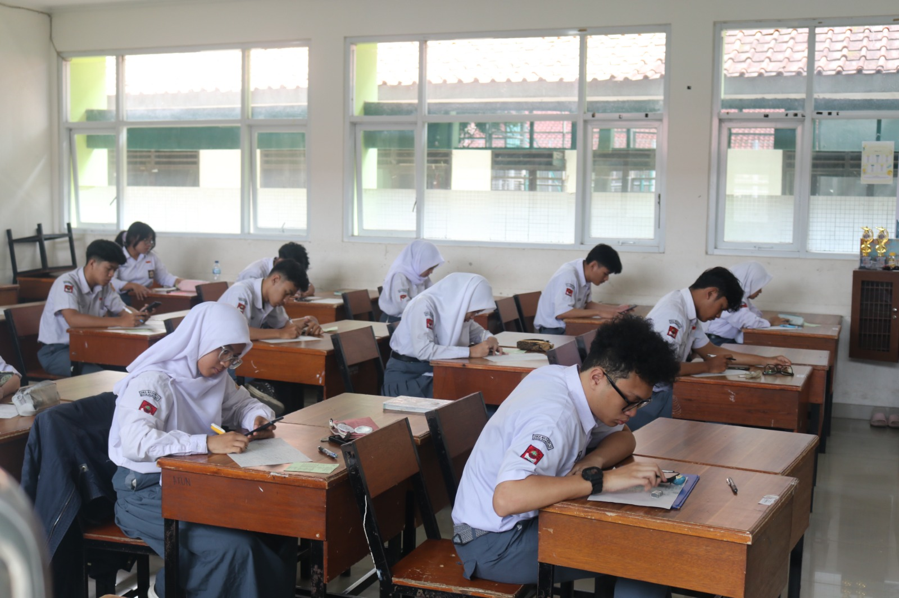
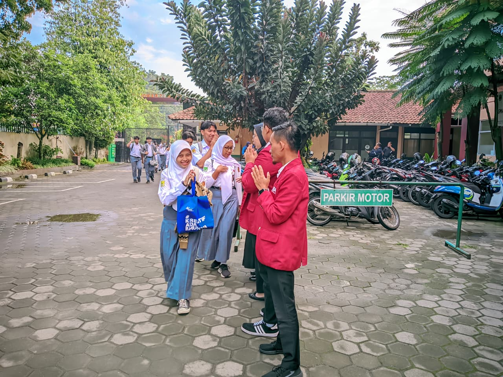
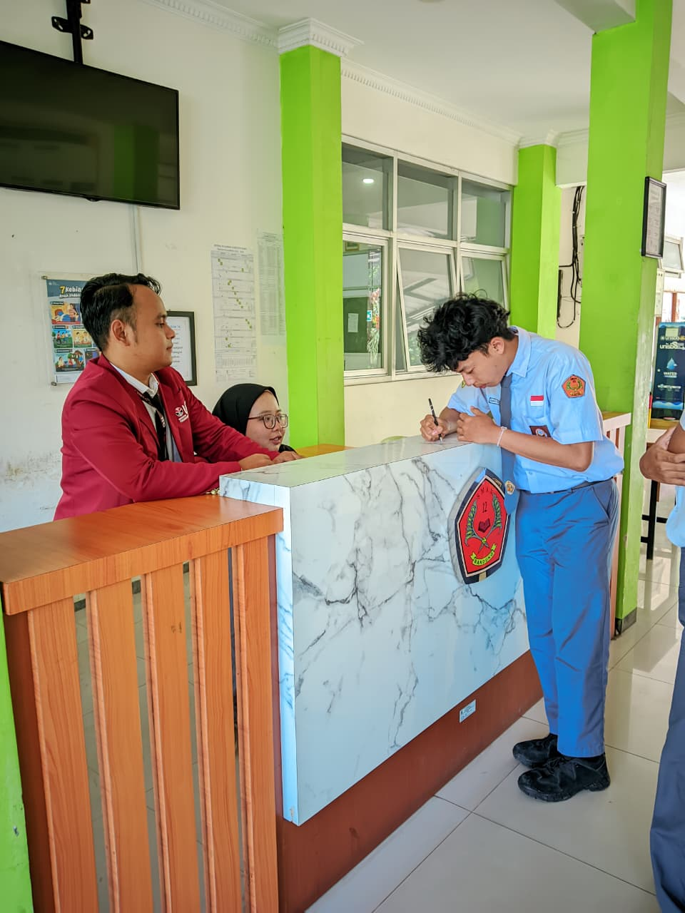
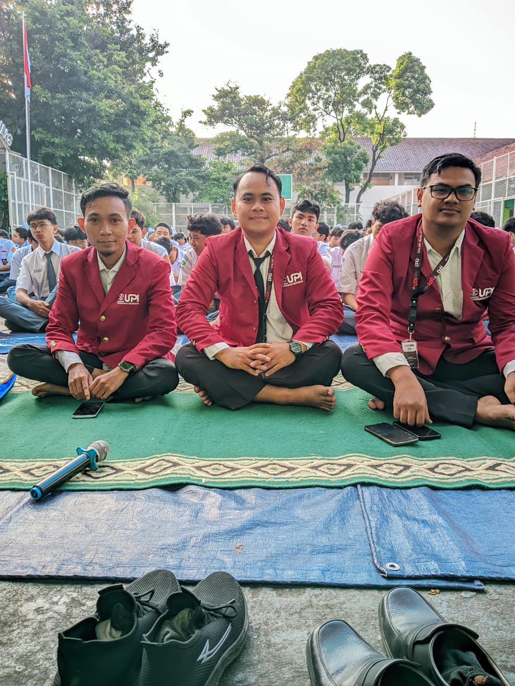
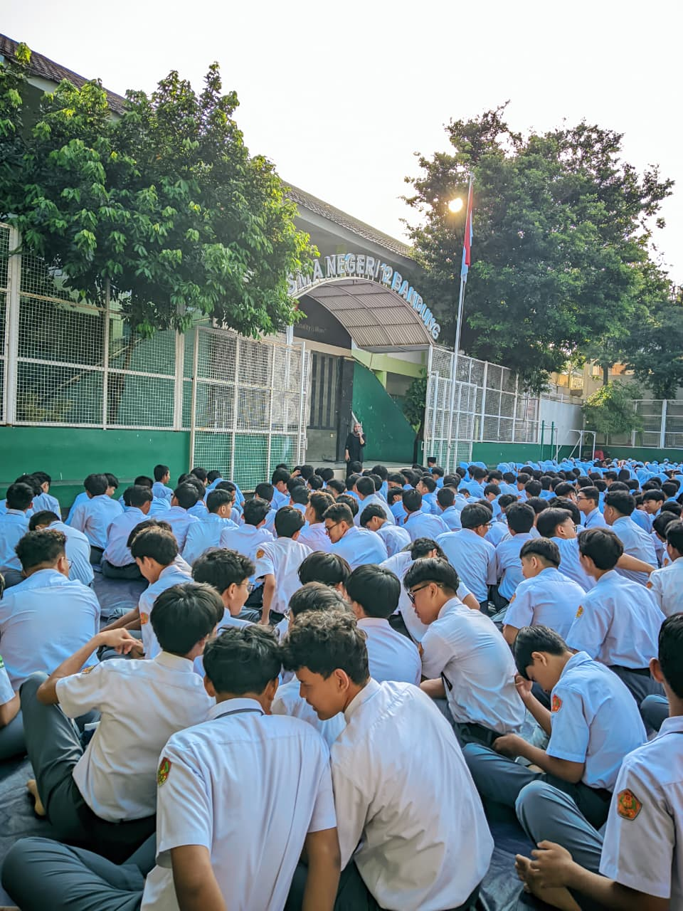